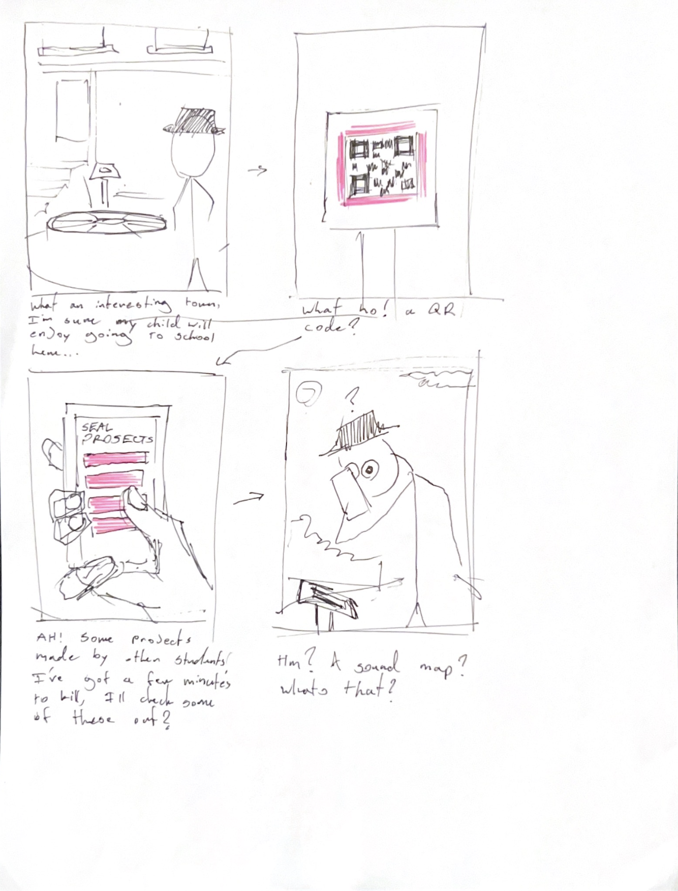
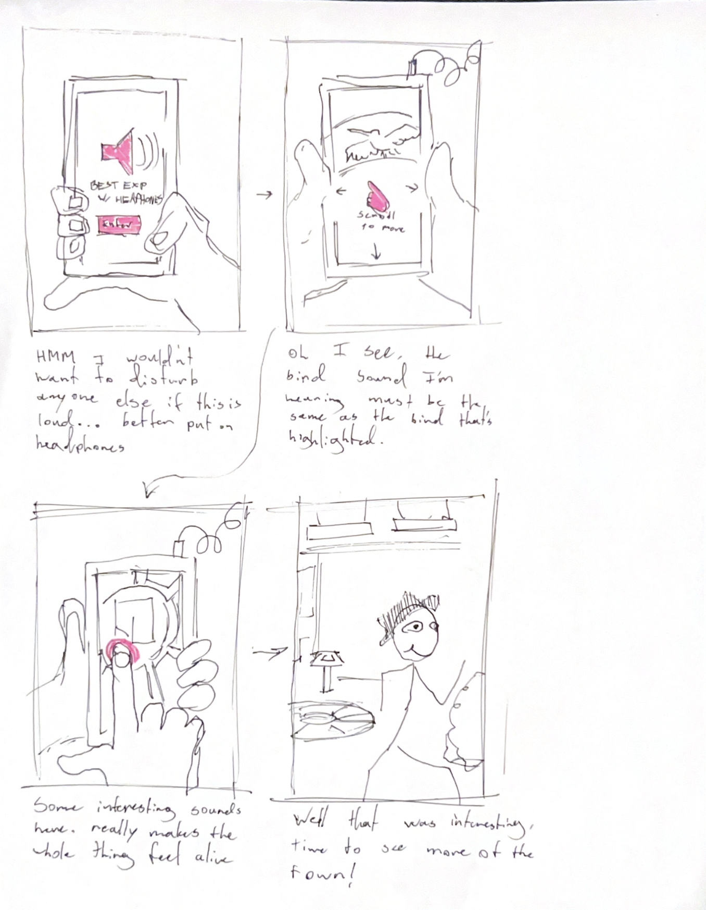

Sky LaRoche DES157b Q3 2023
Capstone Project User Journey
Through drawing up a user journey I realized a couple of things. Firstly, my project is not a common type of website and will probably require some explanation when people first interact with it. Also, despite the fact that I depicted someone choosing to wear headphones with the project, I realized it's probably not very likely that people end up using headphones. It also became clear that this project will likely be viewed in passing rather than a purposeful session, so the bulk of the interaction should happen pretty quickly.
 